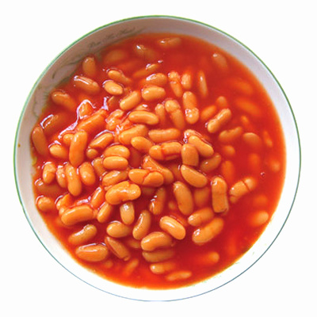

How To Open Up A Can Of Bean and Eat It While Questioning Your Life

There are two different ways to prepare and I will tell you both of them
Ingredients
A mighty can full of beanzz
It's not an ingredient but a can opener may help
Steps for People Who Still Have Hope For Future
- Open the can with the ca opener
- Place every single one bean in container that you can heat
- Add a little bit of water to prevent your beans from drying out or sticking to the container
- Heat it up until it's warm enough
- Eat it with huge smile on your face
Steps for Us
- Open the can somehow
- Eat it fast just not to feel
Home Page